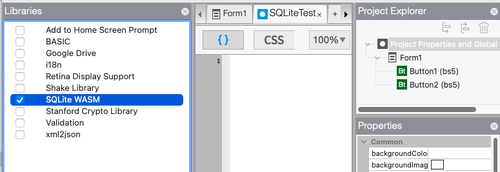
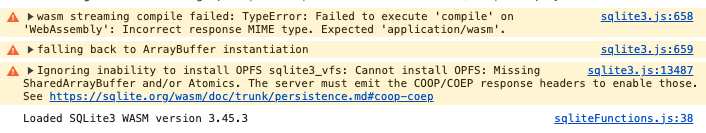

Support for SQLite
Google has deprecated native SQlite, also referred to as WebSQL. They have been warning of this for a while. (If you're interested in why they did this, check out this post).
SQLite can still be used with the help of a library. There are a couple of methods.
1. Use SQLite3 WASM to save to localStorage
You can include the SQLite3 libraries with your project. A library has been developed which provides the SQLite3 functionality for JavaScript.
AppStudio makes this easy. To enable it, select SQLite (WASM) in the Libraries section of your Project Properties:
{kind=link}

If you're using AppStudio's Sql and SqlOpenDatabase, only your SqlOpenDatabase statement will need to be changed: your database name should be localStorage to save your data between runs. It is based on kvvfs.
DB = SqlOpenDatabase("localStorage")
The samples SQLSample1, SQLSample2 and SQLSample3 have been updated with to use SQLite WASM.
The data saved in localStorage is persistent.
New Features and Notes
1. DB.clearStorage() wipes out the database you created in localStorage.
2. DB.storageSize() reports how much localStorage you are using.
3. Compressing localStorage - The database in localStorage is updated whenever you update the database. However, garbage is not collected. You can clean it up (and save some space) by doing the following:
DB.clearStorage()
DB.exec("VACUUM INTO 'file:local?vfs=kvvfs'")
4. The Sql function is now synchronous - meaning it executes completely before the next statement is executed. In most cases, this will make no difference to your code. We did find an error in one of our samples:
// No longer works as expected sqlList[0]=["SELECT orderno, customer FROM tabOrders;"] Sql(DB,sqlList) sqlList = [] // Proper way to do this sqlList = [] sqlList[0]=["SELECT orderno, customer FROM tabOrders;",showOrderSuccess, sqlErr] Sql(DB,sqlList)
5. Double quotes are not allowed in SQL statements. For example:
...AND customer_type = "T"...
should be
...AND customer_type = 'T'...
6. You'll see some new error messages in the console. These can be ignored:

{kind=link}
Restrictions
- The limit on localStorage is 10 megs (currently; on Chrome).
- You can only have one persistent database, in localStorage.
- Other databases will be cleared when the page is reloaded.
- You cannot use SQLite WASM and Cordova plugins at the same time: Use SQLite WASM for desktop apps and a Cordova plugin for mobile apps.
- The library adds about 1.4 megs to your app.
- You can test using Start in Desktop Browser, but not Deploy to Local Folder.
This workaround continues to evolve and is subject to change.
Method 2. OPFS
It's possible to use OPFS to save the database to an actual file, which removes the restrictions on database size and number. This is more complex than Method 1, and will not be described in detail here.
If you're using OPFS, there are a couple of utilities which allow you to examine the database. OPFS Explorer is a browser extension which can be used to save your database to your computer's file system as an SQLite database. DB Browser for SQlite is a standalone app which lets you create, search, and edit SQLite database files.